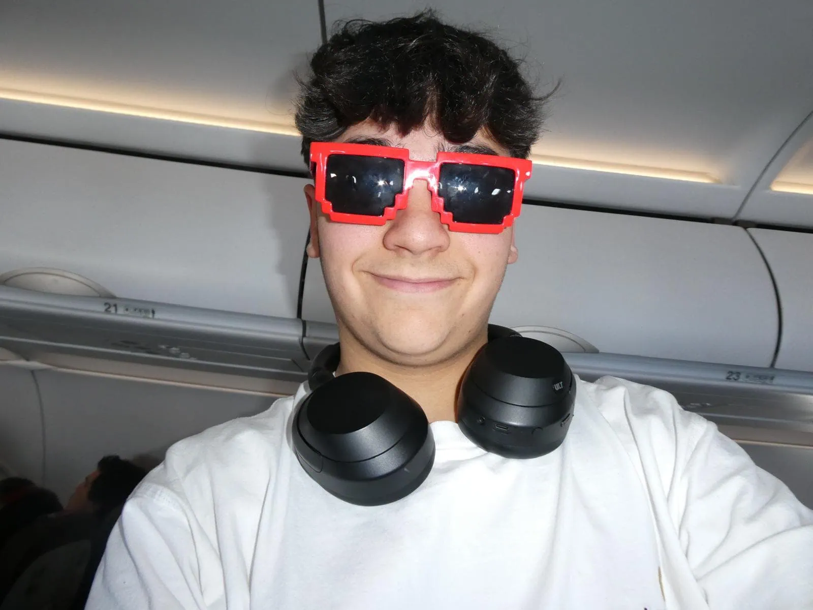
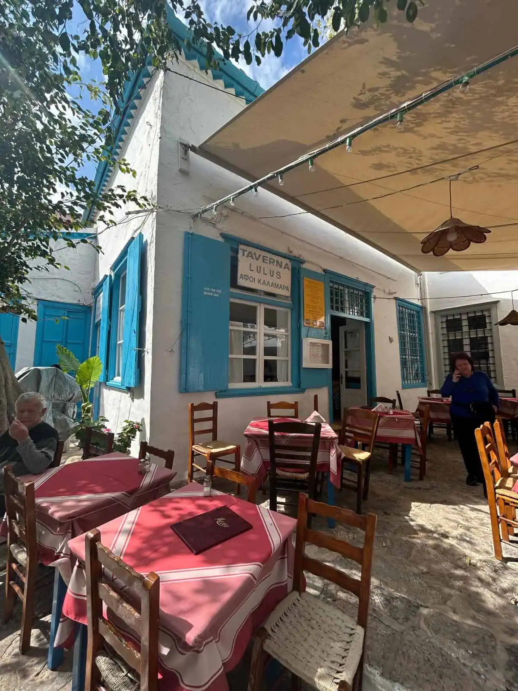
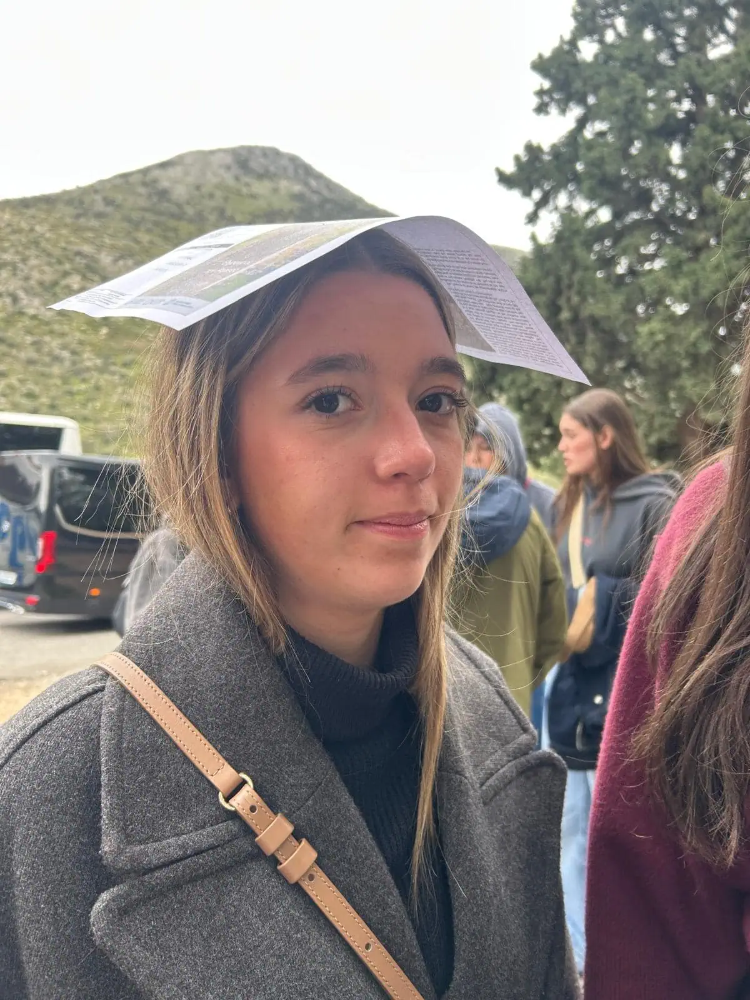
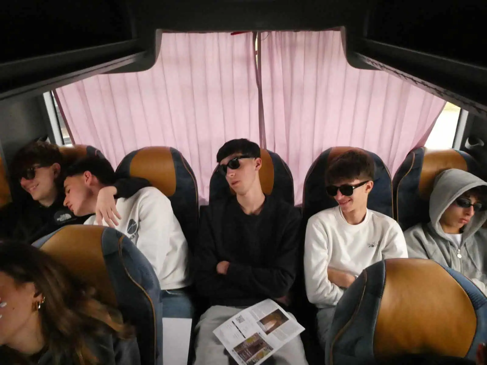
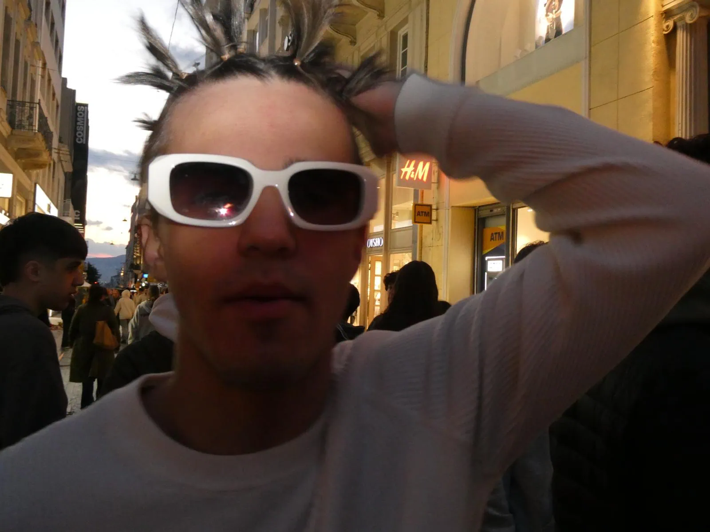
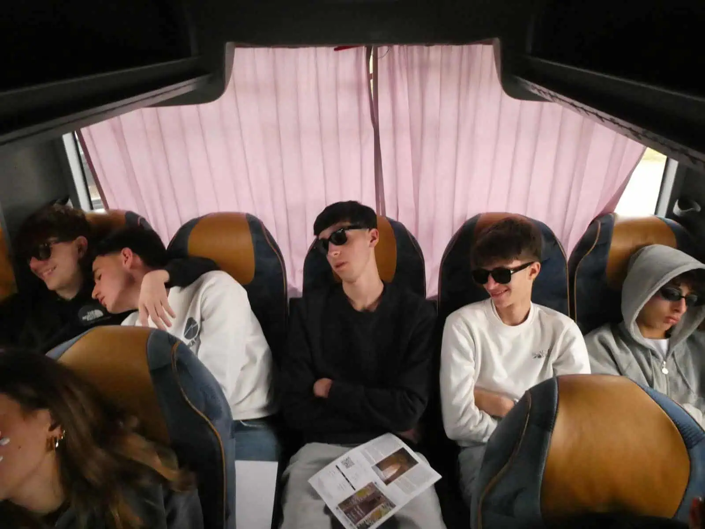
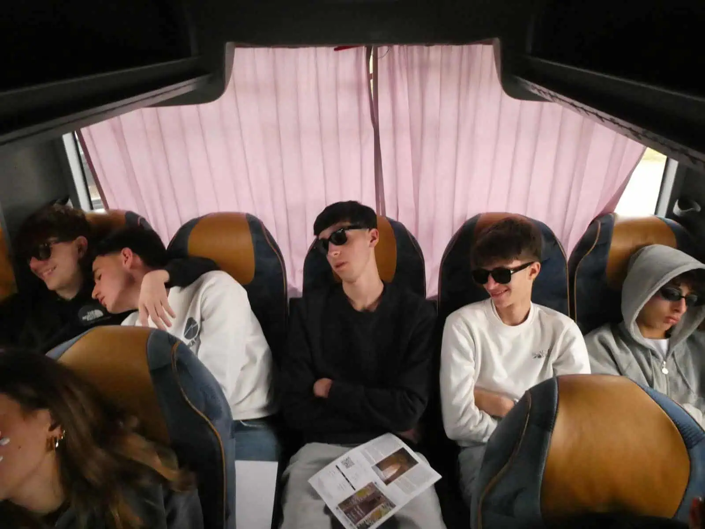
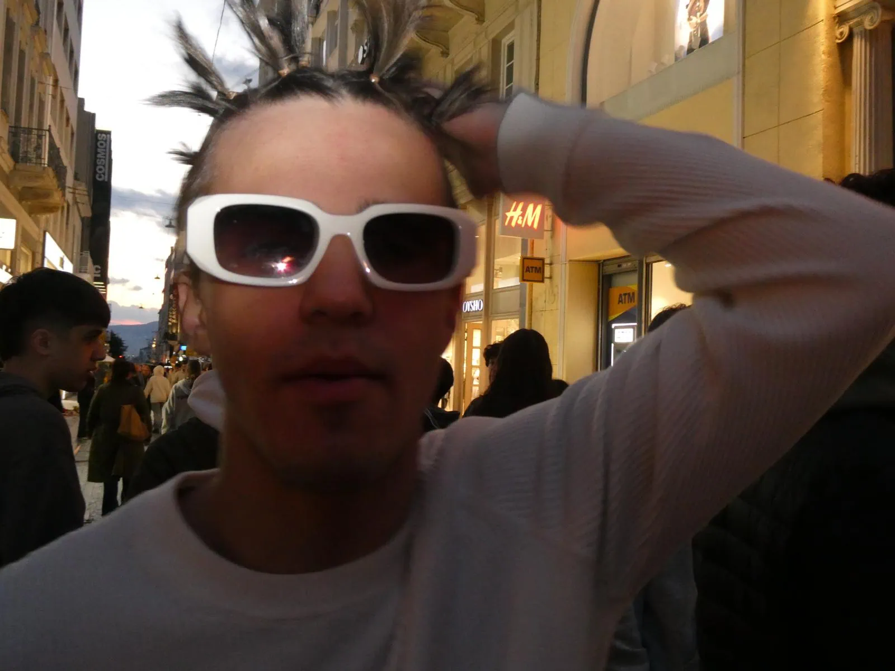
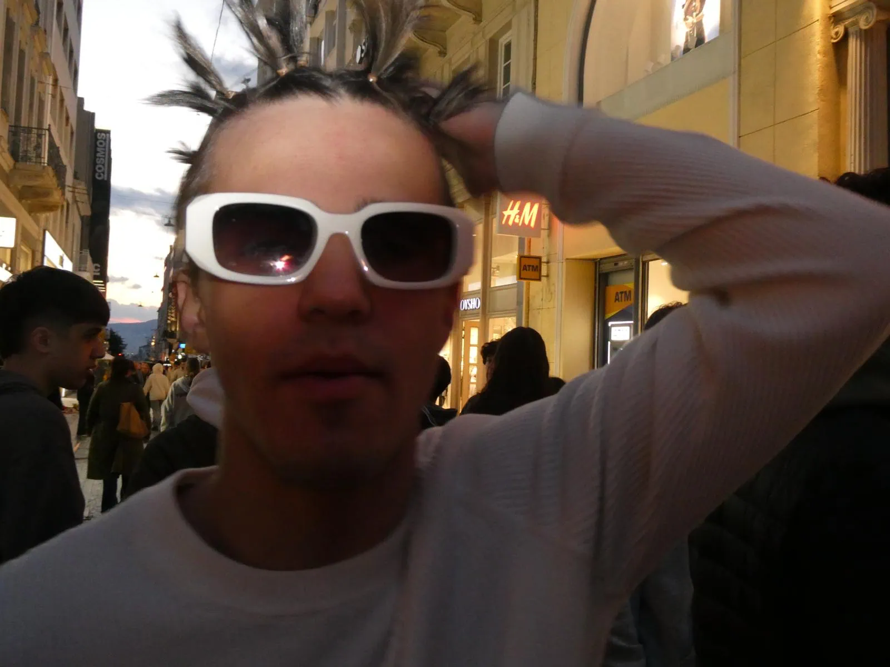

Empezamos el viaje súper pronto. Salimos del aeropuerto de Vigo a las seis de la mañana,
que ya de por sí era una locura porque casi ni dormimos. Hicimos el primer vuelo hasta Madrid, que fue
rapidito, y cuando llegamos allí, nos tocó esperar unas horitas hasta el siguiente avión. En ese rato
aprovechamos para desayunar tranquilos y comprar comida para el vuelo largo, porque si no, había que pagar
la del avión y, sinceramente, no me apetecía gastar más.
Después, desde Madrid cogimos un vuelo de unas cuatro horas hasta Grecia. Peeero, aquí vino el primer
problemilla del viaje: nos subimos al avión y cuando intentaron arrancar, por lo visto, el sistema que
enciende los motores petó. Así que nos tiramos como una hora y pico ahí dentro, sin movernos, esperando a
ver si lo arreglaban, porque si no, cancelaban el vuelo y teníamos que esperar al siguiente. Fue un poco
agobio, la verdad. Pero bueno, al final lo arreglaron y pudimos despegar. Pero claro,
4 horas de vuelo dan para mucho... Incluso para una sesión de fotos!
Smile with the glasses!!

Cuando llegamos a Grecia ya íbamos con retraso, así que no nos dio tiempo a ver la ciudad ni nada. Nos
subimos directamente al bus y la guía empezó a contarnos cosas sobre el sitio, en plan lo típico de “aquí
esto, allá lo otro”, pero claro, después de doce horas de viaje, estábamos todos medio zombis y nadie le
hizo mucho caso.
El hotel estaba bastante bien, aunque la zona de alrededor… digamos que era un poco complicada. Pero bueno,
eso lo dejamos ahí. Lo guay es que en el hotel había más grupos de gente de nuestra edad, así que
empezamos a conocer a gente y eso ya le dio un toque más guay al viaje. Esa noche fue bastante tranquila,
nos quedamos en el hotel, dejamos las cosas, nos duchamos, cenamos, y luego cada uno estuvo por su lado
con su grupito, charlando, dando una vuelta, pero sin nada muy loco.
Un poco de just-dance antes de dormir...
Y así terminó nuestro día cero. Primer día de viaje: check.
Día 1. Acrópolis, fotos y anécdotas para el recuerdo.
Nos despertamos sobre las 7 en el hotel, bastante muertos, no voy a mentir, porque la noche anterior nos
acostamos tarde. Madrugón, desayuno rápido y al bus, que nos esperaba un día movidito. El primer destino
fue el Museo de la Acrópolis, y fuimos con la guía, que antes de entrar ya nos estaba contando cosas
interesantes (aunque a esas horas no era fácil prestarle mucha atención, la verdad).
Ese día íbamos todos bastante monos, porque sabíamos que iba a ser uno de esos días de muchas fotos. Dentro
del museo nos explicaron cositas sobre estatuas, pinturas y demás —hubo una parte en la que no se podía
hacer fotos, y sinceramente sigo sin entender por qué, pero bueno—. Lo que más me gustó fue una maqueta de
la Acrópolis hecha con piezas de Lego, con muñequitos y todo, incluso brujas dentro de la representación…
muy cuqui, la verdad.
Después nos pusimos todos delante de una cristalera enorme a hacernos fotos. Vale, no estábamos escuchando
mucho a la guía, pero es que el sitio lo pedía: la luz, las vistas, todo. Terminamos la visita y fuimos
caminando hasta la Acrópolis (menudo paseo, por cierto). Yo iba con botas y casi me mato, porque el suelo
allí es súper resbaladizo.
Una vez dentro, nos dejaron como una hora y media para ir por libre, sacar fotos, disfrutar… Mis amigas se
pusieron a llamar a sus madres para enseñarles todo, yo aproveché para sacar fotones. Luego, con los de mi
clase, nos encontramos con unas griegas majísimas, nos hicimos fotos con los profes y seguimos el camino.
¡Chicos una foto!
Después fuimos a comer, caminando entre callecitas preciosas. Fotos por todas partes: con Juan, con las
calles, con un coche que era pre-dioso. La comida estuvo genial: platos abundantes, sabrosos, aunque el postre
fue… raro. Pero la salsa griega de la carne, de diez.
Tras comer, hicimos un paseíto de una hora por el centro, y luego tuvimos tiempo libre para hacer lo que
quisiéramos: compras, caprichos, lo que se terciara. Volvimos al hotel como a las 8, caminando todos juntos
(porque la zona no era la más tranquila del mundo a esas horas, pero no pasó nada).
Ya en el hotel, cenamos y tuvimos otro ratito libre por la noche. Jessica, la pobre, terminó un poco harta
de todo el grupo —incluidos unos italianos que estaban bastante intensos—, pero aun así se sentó con
nosotras en el pasillo a charlar. Fue un cierre muy bonito para un día largo, divertido y lleno de
anécdotas.
Día 2. Islas, tormenta, mareos y guerra fría por los asientos.
Este era el día: el esperado crucero por las islas griegas. Suena glamouroso, pero fue más bien una
aventura. Empezó temprano (5 a.m.), y al llegar al barco vimos que el espacio era reducido: quien llegaba
primero, dormía calentito. Íbamos muy cansadas, así que nos apalancamos como pudimos. Visitamos tres
islas: Hidra, Poros y la famosa de los pistachos, Egina. En Hidra, todo muy bonito y
tranquilo, y la guía nos dejó ir a nuestro aire. Fotos, souvenirs, carteles para un trabajo, lluvia
inesperada, gatitos por todas partes. Perfecto. Luego, error clásico: volvimos tarde al barco y la
cola para comer era una locura. Vendaval incluido, y hasta un muslo de pollo salió volando. En Poros
solo bajamos por café (el mejor del viaje). Estábamos agotadas. El clima empeoró, la tripulación nos
ofreció un sitio abajo (más movido, claro), y acabamos arriba otra vez, respirando aire para no marearnos.
En la tercera isla compramos comida, ropa y pastillas para el mareo. Estrategia clara: subir pronto y
pillar buenos asientos. Funcionó… pero se armó lío. Gente reclamando sitios "reservados", tensiones, y
una señora que nos quitó mochilas y se sentó sin más. Así que hicimos lo que mejor se nos da: cantar,
animar, montar la fiesta. La tormenta no pudo con nosotros. Hasta los turistas se unieron, música española,
conga en medio del barco. La tripulación feliz, y nosotros también. De vuelta al hotel, empapadas pero
felices. Y aunque esa noche dormir fue lo último, cerramos uno de los días más épicos del viaje. Mareos,
frío, pollo volador… pero también risas, unión y muy buen rollo con los profes.
Si hay pocas fotos es que te lo has pasado muy bien

Día 3. Tumbas y un susto de muerte
El día 3 fue bastante aburrido, con mal tiempo y todos un poco cansados tras el día anterior. Seguimos
la rutina de siempre y visitamos un pueblo con restos arqueológicos y el Teatro de Epiaduro. No estuvimos
muy receptivos: la guía hablaba mucho y nosotros solo queríamos volver a casa. Lo más memorable fue cuando
la guía cantó en una tumba con eco, lo que nos hizo reír mucho. De ahí salió el chiste “semicírculo,
semicírculo”. Después hicimos más visitas sin mucho interés y comimos en un salón de bodas. Las naranjas
fueron lo mejor del día. Luego volvimos a Atenas en bus. Al llegar, algunos fueron a ver el cambio de
guardia y otras preferimos descansar y preparar las maletas.


Estuvimos unas cuatro horas en el hotel: Valeria, Candela, Jessica y yo. Todo tranquilo, charlando c
on Jessica. Como siempre, nos dijeron que nos arregláramos para bajar a cenar, pero algo raro pasó:
nos reunieron a todos en el hall. Marce nos preguntó si nos quedaríamos un día más, y claro, dijimos
que sí, sin imaginar lo que venía. De pronto, nos suelta que sí o sí nos teníamos que quedar un día más
por una huelga general en Grecia. Ahí empezó el drama: gente llorando, llamadas a casa, nadie entendía
nada. Mis padres pensaban que les estaba vacilando. La organización se movió rápido y logró que
algunos volaran antes. Los demás, a quedarse. Por suerte, ya estaba todo planeado: dormíamos y comíamos
en el hotel, y al día siguiente veríamos qué pasaba. Esa noche cenamos, subimos a la habitación y a
dormir. Ahora que lo pienso, igual exageré al decir que el día fue aburrido, porque pasaron muchas
cosas. Sí, el ambiente era de cansancio, pero también hubo momentos intensos. Por ejemplo, ya estábamos
hartos de los italianos. Se creían los dueños del hotel. Hacíamos lo mismo, pero a ellos les permitían
todo y a nosotros nos regañaban por cualquier cosa. En un teatro antiguo, súper chulo, todos podían
probar la acústica desde una marca en el centro. Los italianos cantaban, gritaban… y cuando íbamos
nosotros, nos echaban la bronca por decir “hola”. Ya estábamos en modo “nos lo tomamos a risa”, profes
incluidos. Conectamos mucho con uno de los guías, que nos decía que al menos teníamos energía.
Mientras todos los demás parecían en un funeral, nosotros aplaudíamos, silbábamos y hasta le gritábamos
“guapo” al guía. En plan show. Eso no gustó. Una profe italiana nos empezó a gritar: que si maleducados,
que si nos calláramos… y Jessica, desde arriba del teatro, les aplaudió con ironía. Fue brutal. Encima
se la pasaban quejándose de nosotros a los profes, diciendo cosas que ellos también hacían. Totalmente
injusto. Pero bueno, nosotros fuimos a disfrutar. Y como ya habíamos dado la nota en el museo y en el
barco, ¿cómo no hacerlo también en el teatro?
Por la noche carricoche
Vale, espera, que se me olvidó contar una cosa importante de la noche del día 3. Porque sí, esa noche fue
la más movida de todo el viaje. O sea, ya llevábamos varias noches teniendo problemillas con los otros grupos
del hotel —porque había más gente alojada allí, no estábamos solos— y, sinceramente, algunos eran un poco mal
educados. En especial, los italianos. A ver, también tengo que decir que no todos los italianos eran así.
La mayoría eran majísimos. De hecho, nosotras nos hicimos súper amigas de una pareja —no sabemos si eran pareja
o no, pero bueno, lo parecían— que eran lo más. Acabaron entrando en nuestra habitación porque apareció un
vídeo en un secador (sí, no preguntéis) y al final estuvimos hablando con ellos de todo: que si España, que
si Italia, que si las diferencias, no sé qué… Y eran un encanto. Pero luego estaban los otros italianos.
Los que, desde la primera o segunda noche, ya estaban con la tontería de ir por los pasillos petando puertas.
En plan, fuerte. Una de esas noches, nosotras ya estábamos dormidas, y de repente PUM, tremenda patada en la
puerta. Y a ver, a mí si me despiertas cuando ya estoy dormida… mal. Salí hecha una furia, pero claro, ya no
había nadie. Y esa noche, la del día 3, fue como el punto de inflexión. Porque nuestros compis de clase
empezaron a hablar con ellos, y como ellos nos picaban, pues nosotros también. Hasta que la cosa se calentó.
En vez de seguir en tono de broma, se lo tomaron súper en serio. Hubo italianos echando a correr detrás de
algunos de los nuestros, en plan persecución de peli. O sea, locura. En una de esas, pensaban que uno
de los nuestros estaba en nuestra habitación —porque nosotras siempre la teníamos abierta, como casi todos
los españoles del pasillo—, y uno intentó entrar. Pero vamos, le explicamos en español, con bastante
contundencia, que no podía entrar ni de coña. Y ya ahí fue cuando Juan (bendito Juan) nos dijo que
si pasaba algo más, que no dudáramos en avisarle. Que no aguantáramos más tonterías, que se estaban pasando.
Así que sí, esa noche fue el inicio oficial del pique con los italianos. No odio, pero sí ese momento en el que pasas
de “bueno, son pesados” a “vale, esta gente se ha pasado de la raya”. Y de ahí… fue a más.
Día 4. La falsa vuelta
Vale, entonces… el cuarto día debería haber sido el día del aeropuerto, el día en el que volvíamos a casa.
Pero nada, no tocó. Huelga general en Grecia, ya sabéis. Así que nos tocó improvisar. Nos despertamos,
nos vestimos y como no podíamos ir al centro por las manifestaciones —porque sí, eran por la mañana y no
queríamos líos—, decidieron llevarnos a un museo que teníamos cerca. En plan: algo hay que hacer. El del
hotel consiguió entradas para todos y para allá fuimos. Nada muy especial, la verdad. Hicimos unas
fotos, dimos una vuelta, nos entretuvimos. No fue nada del otro mundo, pero por lo menos nos sirvió para
hacer tiempo. Luego volvimos al hotel, comimos allí y pasamos un rato tranquilos. Y entonces… llegó
el evento del día: la fiesta de las trenzas de José. A esa fiesta se unió Diego, que también quería su
estilo trenzas a lo Kea. Y bueno, Nico también quiso participar, pero su pelo no daba mucho de sí, así
que le hicimos unos chichitos y todos contentos. Básicamente, una peluquería improvisada en medio del
hotel.

Por la tarde ya sí pudimos ir al centro, así que nos fuimos de compras. Cada uno a buscar lo
básico para sobrevivir el tiempo que hiciese falta (por si se alargaba la cosa…) y de paso, comprar esos
regalos de última hora que se nos habían olvidado. Porque claro, nadie había tenido tiempo de pensar en
los recuerdos para la familia con tanto caos. Ese día en sí no tuvo nada especialmente memorable, pero
sí fue de esos en los que ya se notaba muchísimo la complicidad del grupo. Estábamos todos más unidos, había
más confianza, más bromas, todo era más natural. Y aunque empezábamos a estar reventados, con gente que ya
se estaba poniendo mala, fiebre, cansancio acumulado… aún así lo llevábamos con buen humor. Y nada,
dormimos esa noche en el hotel. Aunque, siendo sinceros, poco se durmió. Era la última noche en ese hotel
y había que exprimirla. Ya sabéis, risas, despedidas, gente de habitación en habitación… Ah, se me
olvidaba una cosa importante: ese día también nos dijeron quiénes se iban. Porque claro, no salíamos
todos a la vez. Un grupo se iba el jueves, y en principio, el resto nos íbamos el viernes… pero no era
seguro del todo. Así que ya empezaban las despedidas, el drama. Había gente llorando, gente feliz, un
poco de todo. Yo la verdad, ni tan mal. Si me tenía que quedar más días en Grecia, pues mira, yo me lo
estaba pasando genial.


.webp) 

.webp) 
